退役之旅
Pre
第二个赛季的ICPC，因为疫情的原因拖了好久好久，不然也不至于要毕业了才打最后一场。等到最后，也只是为了等一场线下罢了。因为毕设和论文的原因，我们都缺少训练，加上zdm一直在南沙和大学城上课，三人合练的机会少之又少。昆明前一天才合练了一次，打铁也是必然。离银川也还有一个月这样，因为zdm只有周末才有空合练，所以就定了周末两天各一套题，不过最后也没有做到，因为种种原因吧，基本上周末是合练一次。到后面发现不是办法，只能我和ljr两个人一起练，一周下来我个人能有四套题左右的训练量。一个月的时间也没有点太多的技能点，重心都放在了做套题的策略上。
Day0
十点钟就从西门出发去白云机场了，也是第一次去白云机场，更是第一次坐飞机去打比赛，不然12小时的铁路真的是顶不住。
到达机场一切都非常的顺利，过完安检没多久，就收到飞机延误的消息，直接延误了两个小时。一看发现广州和华东都有很多的云，打开手机发现很多群友的航班直接取消了，只能默默祈祷我们的航班只是延误，千万千万别取消了。


 天气变脸过程
天气变脸过程
最后两点多登机，坐上飞机就带着耳机睡大觉，等着起飞，睡了一会迷迷糊糊的发现还没起飞，有点难受，最后三点左右才顺利起飞。
 蓝天白云
蓝天白云
到河东机场的时候已经六点了，磨磨蹭蹭坐上石嘴山出行的大巴车，七点多才出发去酒店。住的是星海湖酒店，在网上看是四星级的，达到门口的时候我也觉得很不错，装修的还可以，但实际入住之后觉得比较一般，应该是常年没什么人住吧，即便是新装修的一号楼也有点旧旧的感觉，我们住的那一间浴缸还是堵住的，而且不知道当时怎么设计的，床头附近都没有插头，除了浴室，只有一个明显的插头和沙发后面的墙有一个，emmm
订酒店之前是说两个人住的，实际上到了那里发现是一个双人床+一个单人床，完全可以一个队一间，有点小亏，不过给报销就无所谓了。神奇的是订的一间还是HelloKitty主题的，猛男最爱doge
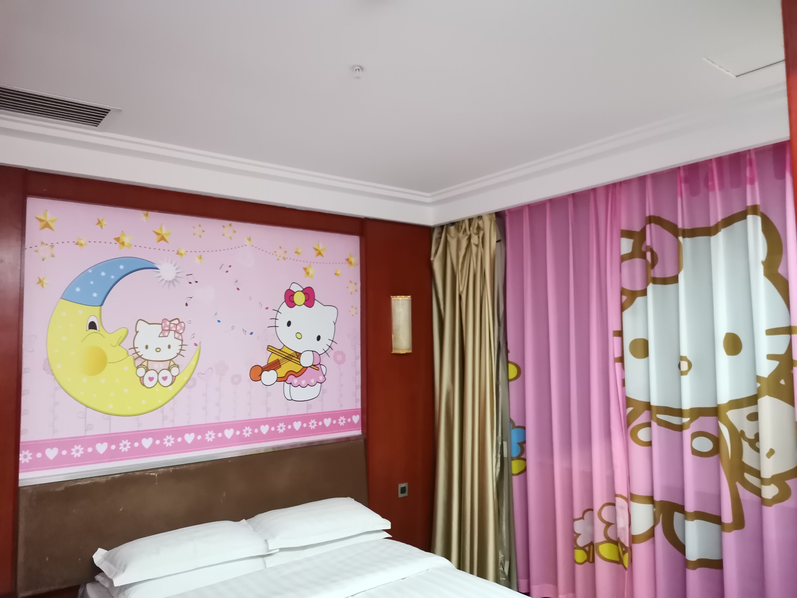
九点多才出去觅食，第一感受就是这个地方车好少，路边的店都不怎么开了，没什么夜生活，比较冷清。第一餐在福乐吃的，吃到了烤羊腿，美滋滋，不会真有人来这是打比赛的吧
果然北方的菜分量都比较多，八个人点了八个菜实在是有点撑，虽然这边的菜都带辣椒，不过不怎么辣，广东人能够接受，不像上次去江西一样，直接爆炸。除了烤羊腿，凉菜挺好吃的，沙葱和牛耳都不错。
 烤羊腿和羊杂煲
烤羊腿和羊杂煲
Day1
大西北早上的风是真的大，冷倒是还好，一定要穿带帽子的衣服，不然风吹的脑子痛。九点多就到了宁理，进到体育馆发现是真的挤，桌子也是真的小，而且屏幕在中间，后面各种线是捆绑住的，挪动不了，键盘的键程很短，非常阴间。一开始Clion不太熟悉，适应了一下之后还可以，问题不大。试机到十点的时候就清场了，只好拿着东西回酒店躺尸。
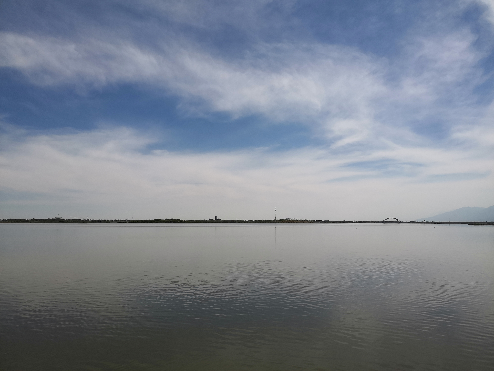
星海湖
中午去吃了三栋楼凉皮，店面都好小啊，根本就坐不了多少人，只能打回酒店吃了，个人感觉醋味过浓了，少加一点点可能好点，量也确实大，适合宵夜啥的，正餐还是得来点羊羊羊才行。
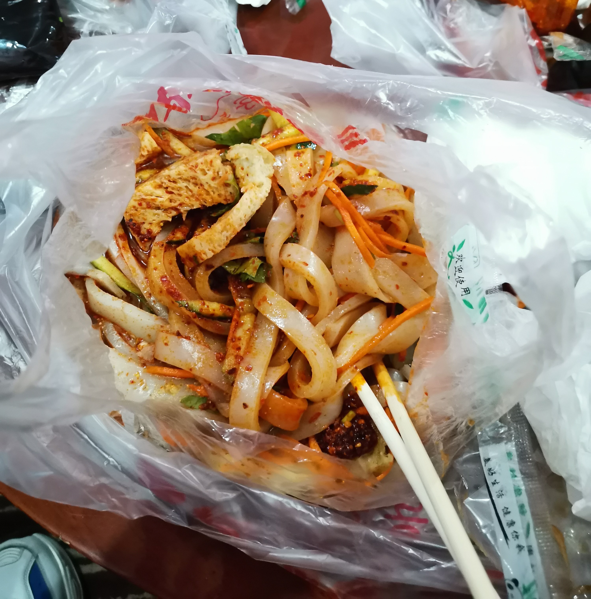
大武口凉皮下午鸽掉了开幕式，去到的时候发现大家都已经开始敲热身赛的题了，有点懵逼，不是还没开始吗，怎么提前发了题目？？？
热身赛的题目巨简单，啪的一下就写完了，没搞懂的是D题放了2000+组数据做压测，搞得A题和B题测了一点点就不测了，到最后我们的B也没测，AK热身赛失败，靠着提交速度排个Rank3，快乐~

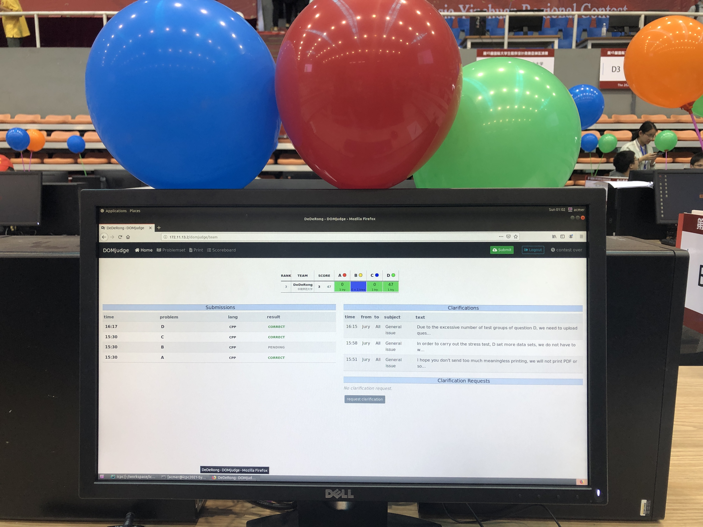
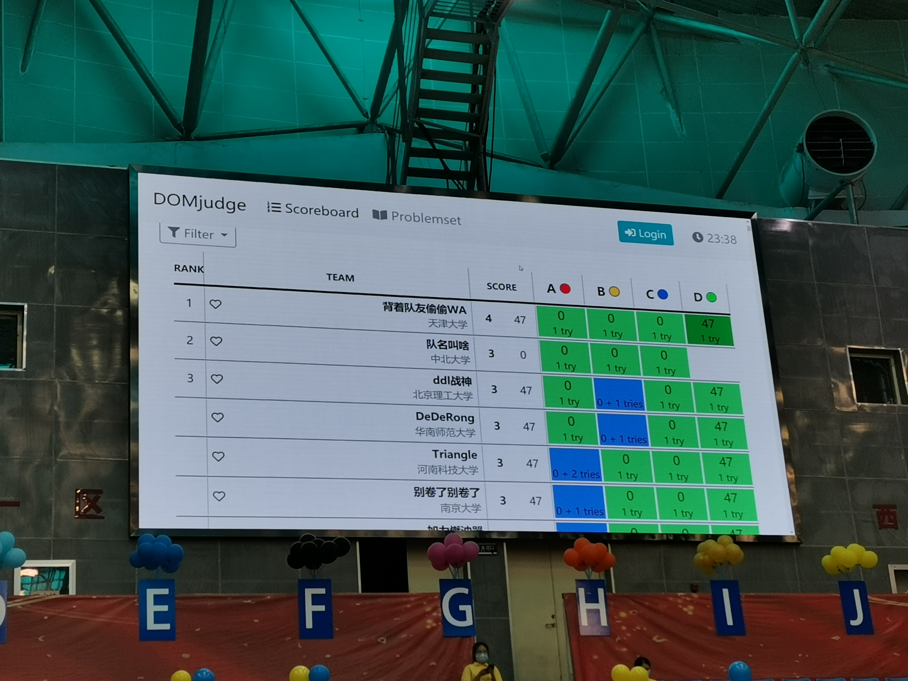
晚上回到酒店躺尸玩了会手机就早早睡了，感觉这几天都没休息好，头痛痛的。
Day2
早上七点就起了，说好的7:40发车来着，结果八点多才走，早知道慢慢来在酒店吃早餐好了，还能多睡一会。
去到赛场发现没有重置，昨天热身赛的代码还在，这？？？
 大乱斗
大乱斗
开局A题被喂了一个假题意，喜提一发WA，后来保守了一点，仔细读了一下就过了。不过这一WA严重拖慢进度，埋下一笔。过完A之后E题和J题过得比较多，J题又被喂了一发假题意，又埋下了一笔，当时想的做法觉得不太可写，只能去看E题，E是一个巨恶心的化学题，读着实在是太难受了，过了很久很久才读懂，一次就过。这时候看了一下榜，发现J过得好多好多，K也开始被过得比较多了，就去看了一下J，发现之前的题意假了，并且看了几个关键信息，就是一个傻逼题，找到左上角的就可以推出全部了，很快就过掉。之后看榜单B题过得也挺多，但是B题我们很早就开了，觉得不太可，并且发现我校有队伍提交了K，但是WA了，就转头去搞K了。K题题意也是读了半天没读懂，之后我根据题目背景猜了一个题意，字典树乱搞，交了第一次WA了，之后找到了Hack样例，ljr猜了一个结论，一交还是WA，这时候其实心态有点爆炸了，因为前期三个题我们过得很慢，罚时已经很爆炸了，现在连WA两发，属实有点难顶。没办法只能静下心来想想细节，之后改了一改交了，3A，直接喊出来了，觉得希望又有了。最后剩下一个半小时，只有B题和G题过得比较多，G题没读过，让ljr和zdm先去读一下，我去想B，但是想了很久都想不出能过的DP，复杂度被卡的死死的，而且突然意识到不太对劲，怎么G题还没读出来，然后就把B题丢了，转过去和他们一起搞G，发现他们说样例没搞出来，只能静下心来读一下题意，搞了一会推出了样例。这个题要找前驱和后继，无脑上了一个平衡树，抄了一个Splay的板子，调了一下样例过了，但是一交还是WA，最后剩的时间也不多了，最后也没过，无力回天。
赛后ljr突然想到一个坑点，惯性思维忽略了，不过平衡树复杂度也过不去，即便当时想到了也还是会TLE，要倒着做用双向链表维护把这个$log$搞掉才行。最后时间所剩不多，根本来不及多想，实在是没想到倒着搞，有点可惜有点无力。
赛后自己分析了一下，如果A题仔细一点，一次过的话，J的题意不假的话前期会过得非常快，罚时会少非常的多，存在手速银的可能，不过没办法了，合练的少，沟通出了问题，这一场读题一直假一部分是题面确实恶心，更多的还是自身的原因。
铜牌意料之中，也不是冲着铜来的，如同赛前被奶的一样，上限铜牌，唉。
赛后等着拍照的时候还被说教了一番，只想赶紧拍完赶紧溜溜球。最后六个人跑去万达吃了个串串火锅，随便走了走，就回酒店躺尸了。
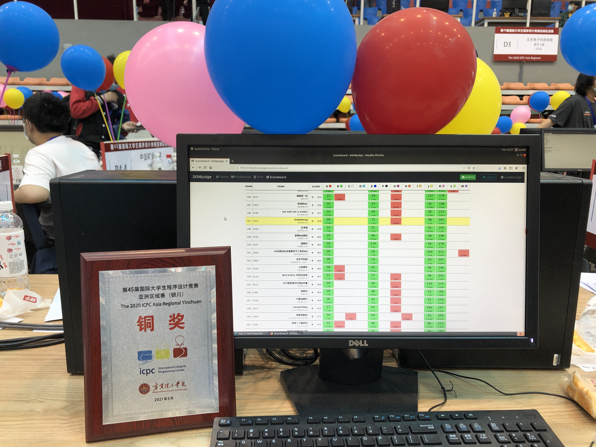
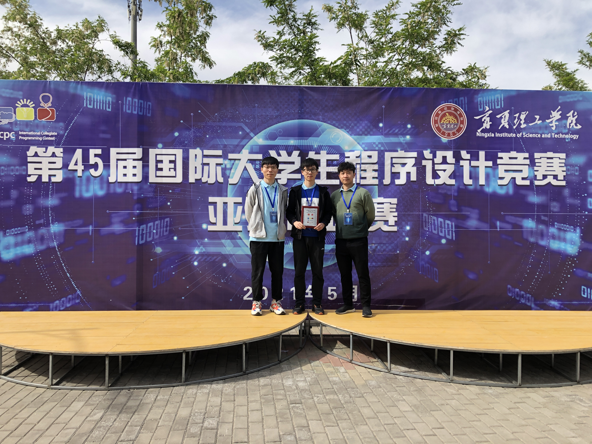
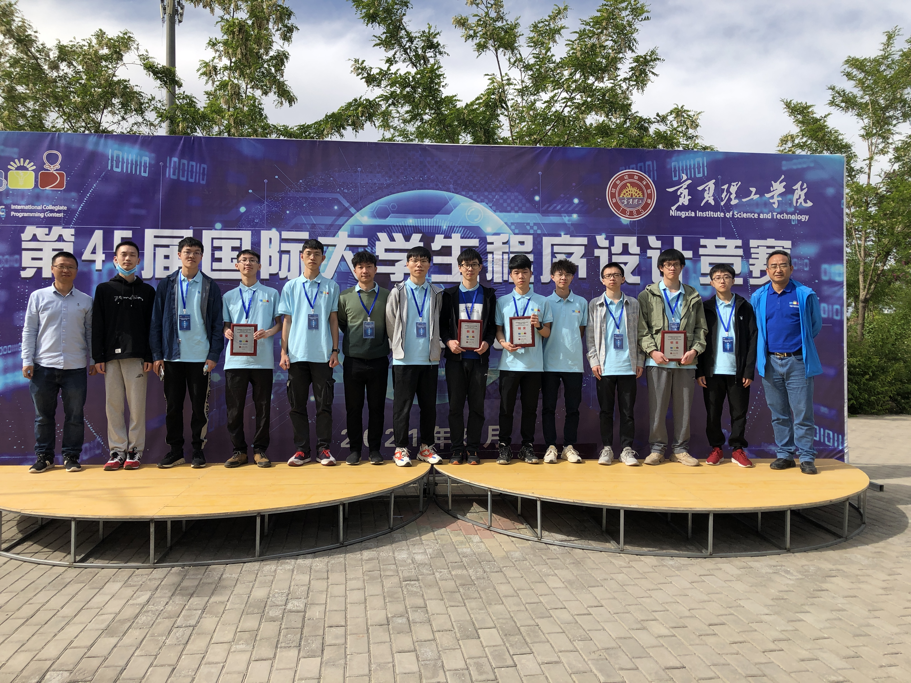
Day3
早上八点多在酒店吃了早餐就五个人一起去百花市场逛了逛，买了点特产，重的要死，可预见的行李箱爆炸。
中午去吃了德隆楼，只有五个人就没有吃无限供应的涮羊肉了，点了几个菜吃，服务员的态度是真的好，个人觉得德隆楼的羊杂煲比福乐的好吃，羊肉做的是真的不错，一点膻味也没有，美滋滋。
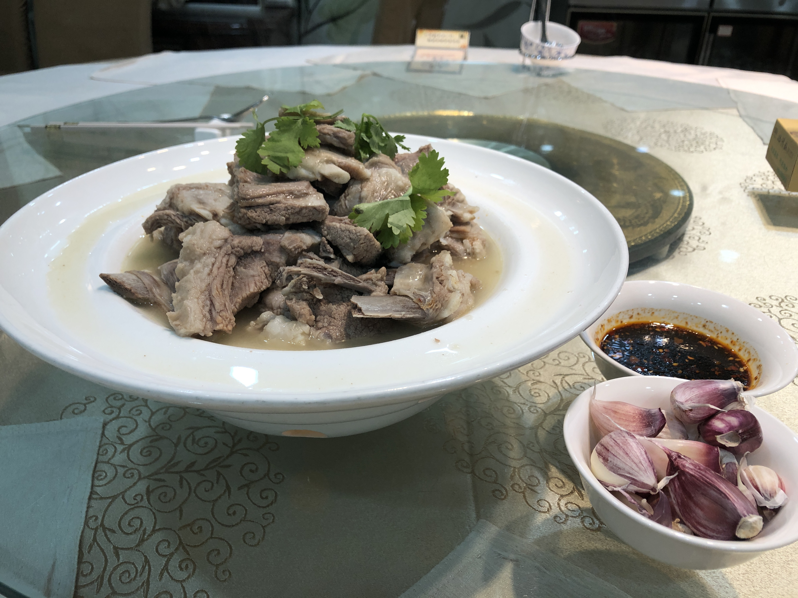
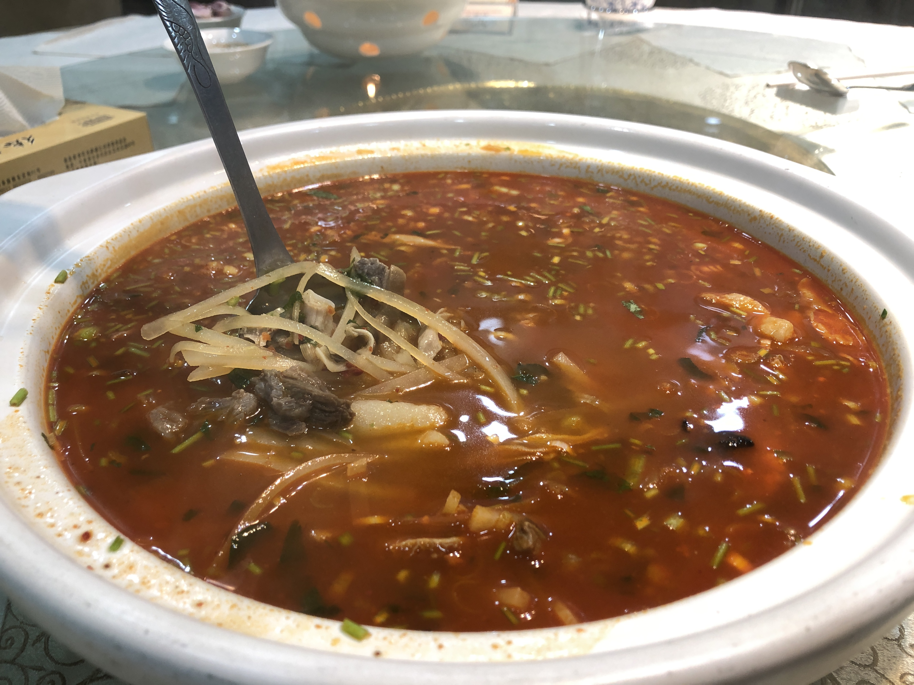
四点多到了机场，准备登机的时候直接延误三小时，爆炸爆炸爆炸。之后又收到延误一个半小时的消息，直接人没了。
晚餐吃了机场的德克士，被狠狠的宰了一顿，吃完就说能够领延误餐券，刚好可以吃德克士，人又没了。
离开前看到了超级美的晚霞，好久没看过这么好看的了，算是延误的一点点安慰吧。
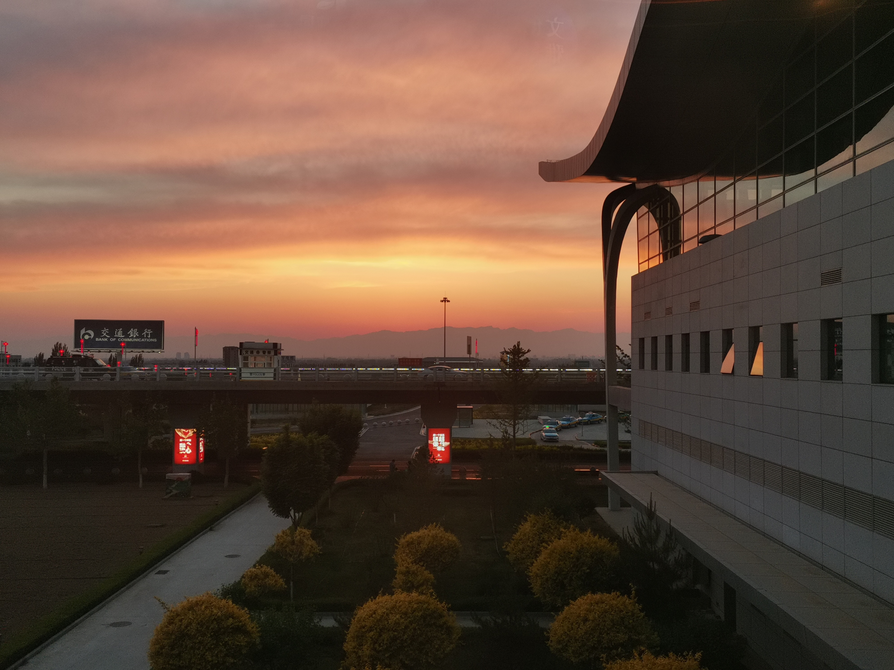


最后十点左右才起飞，吃完飞机餐没多久突然发现飞机左边不远的地方有雷暴，不知道是哪一位道友在渡劫，功力之深厚，天空都亮了，万幸没啥事，就是有时候气流有点大。
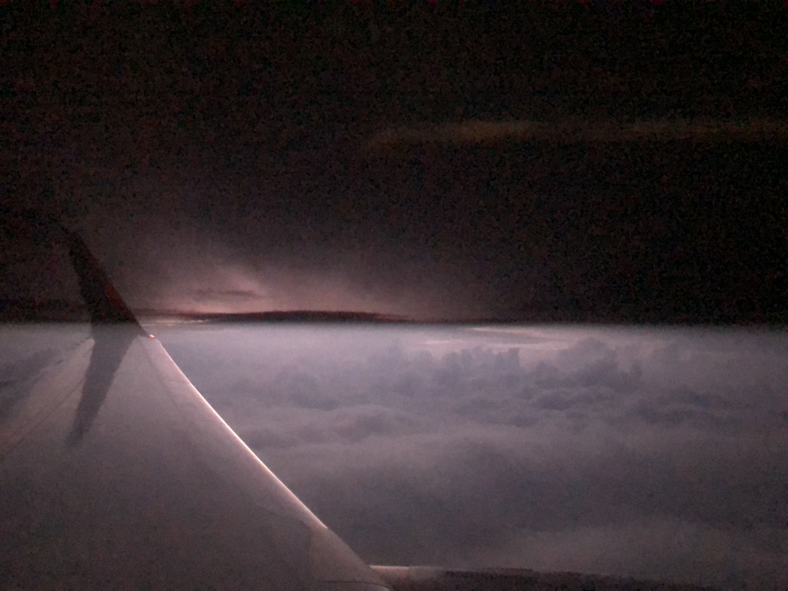
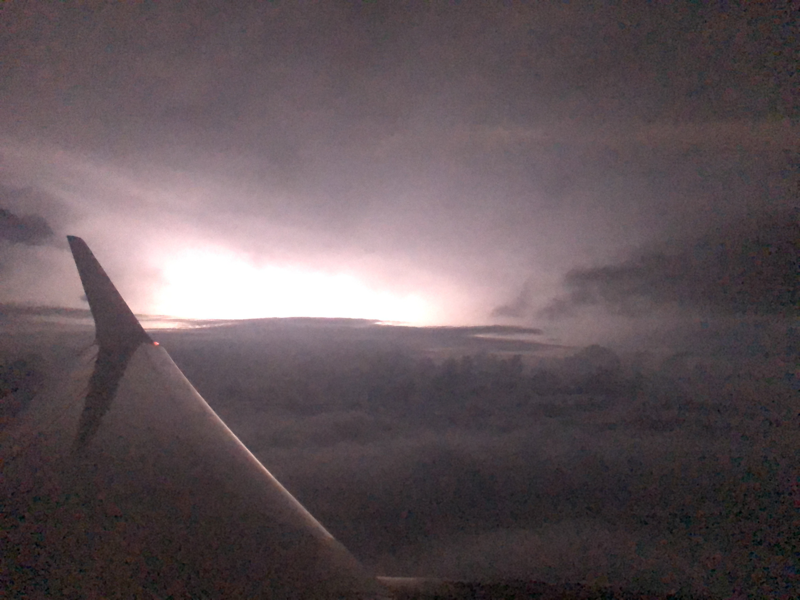
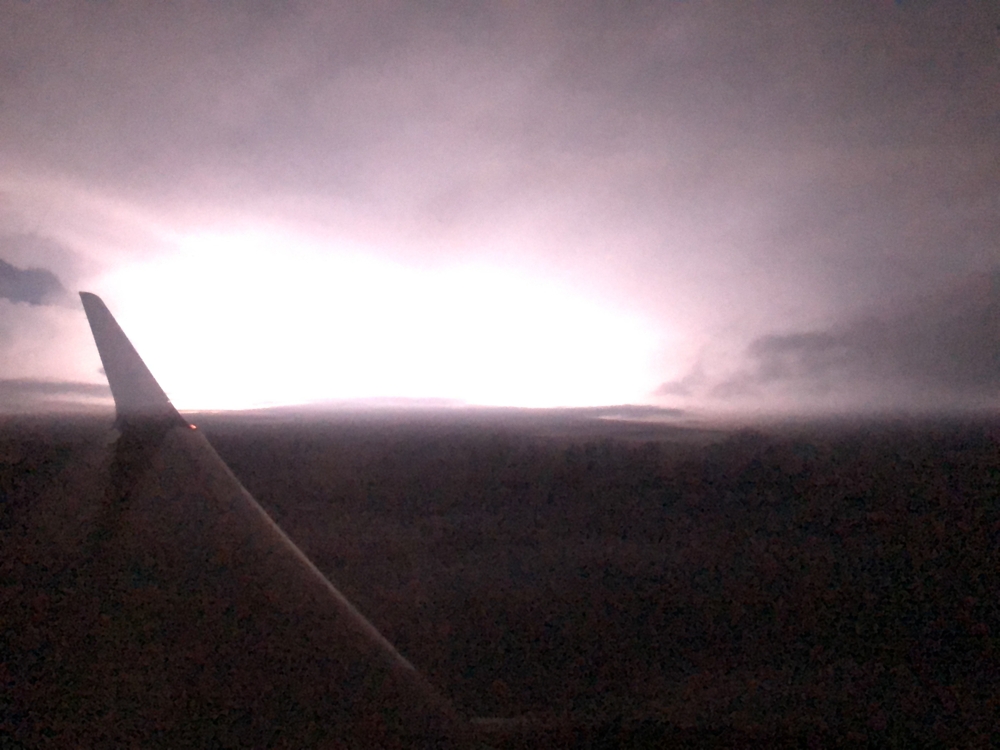
新的风暴落地已经一点了，宿舍是回不去了，荒郊野岭的出去住一晚感觉也不是很有必要，五个人直接在机场过夜了。一大早赶早班地铁回SCNU，人多到爆炸，还好有坐的位置，整个人都是恍惚的，退役之旅也终于顺利结束了~
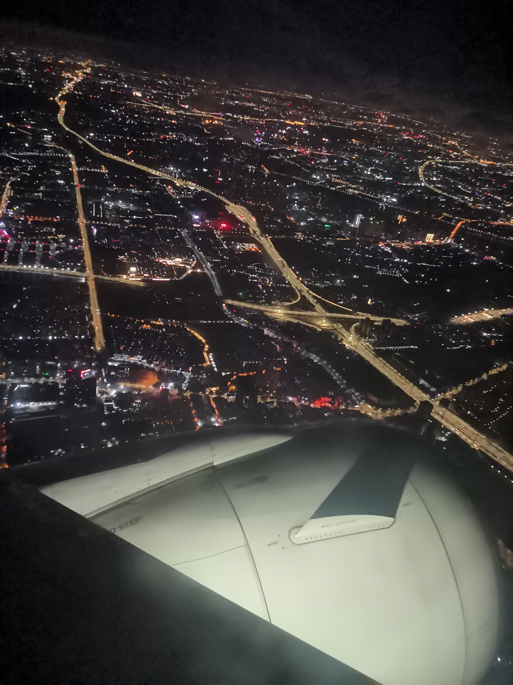
广州夜景End
大四下因为毕设和论文，cf都没去打了，自己在算法竞赛上的付出远远不如之前，最后这个结果也算是可以接受，但又没那么好接受。有时候真的很羡慕中学就接触了信息学竞赛的人，上了大学就能在赛场上光芒四射。不知道是热爱还是拿牌的执念呢，DeDeRong从大二下组队，大三上开始打区域赛，一直到毕业之前打完两个赛季结束，挺奇怪的，如果大一就开始该多好呢。终究还是自己实力问题，付出的不如别人多，自然拿不到想拿的牌牌。不过，感谢这一段经历，很有意思，很有趣。